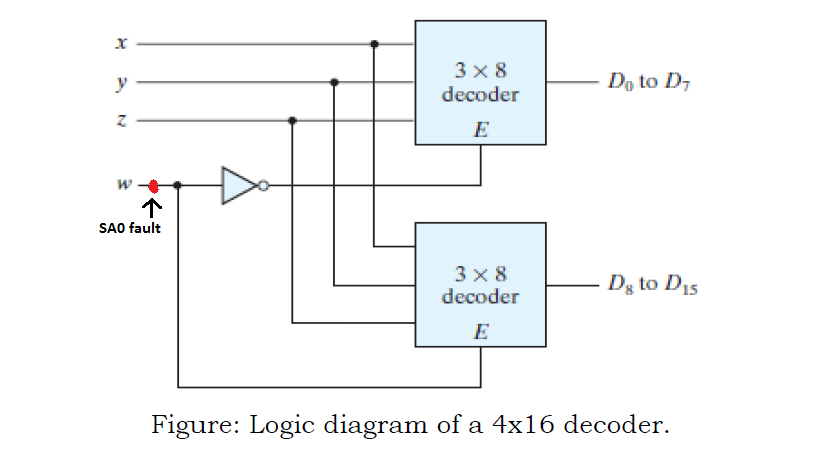
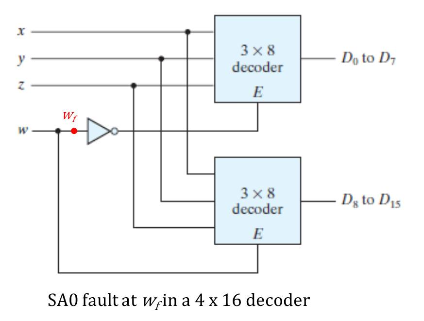
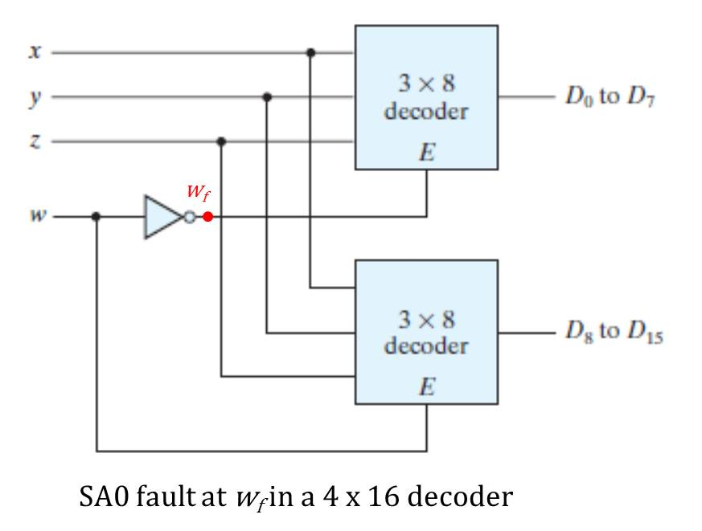

SA0 fault on w input wire
Case (i)
When SA0 fault is at the position shown in the below figure

In this case the value of 'w' will always be at logic '0' regardless of it's input values.Therefore, the above decoder(D0 to D7) will always be activated and the below decoder(D8 to D15) will always be deactivated.So, at the time when we expect output from below decoder (w input value is at logic high) we will see abnormalities in our circuit.We will see the repetion of the output pattern of above decoder.For instance, say the input is 0001 so the expected output and the output obtained both will be same i.e. D1,but if the input is 1001 so the expected output is D9 but the obtained output will be D1.
The truth table of faulty circuit with expected and obtained outputs is shown below:

Here w is the actual innput value and wf (faulty value) represents the value of w changed due to fault present in the circuit.
Case (ii)
When SA0 fault is at the position as shown below:

In this case the SA0 fault in the circuit will be experienced only by the below decoder. For the above decoder the the value of 'w' will be same as the input. But for the below decoder due to the SA0 fault present the value of 'w' will always be at logic '0' regardless of the input value of 'w'.As 'w' is an enable for below decoder so the below decoder will remain deactivated.So, at the time when we expect output from below decoder (w input value is at logic high) we get no output from the circuit, As at that time the above decoder is also deactivated. For instance, say the input is 0010 so the output obtained both will be same as expected output i.e. D2,but if the input is 1001 so the expected output is D9 but no output will be obtained in this case, as both of the decoders are deactivated.
The truth table of this faulty circuit with expected and obtained outputs is shwon below:

Here w is the actual input value and wf (faulty value) represents the changed value of w connected only to decoder 2
Case (iii)
When SA0 fault is on the w line at the position shown:

In this case, SA0 fault is present at the position wf and hence '0' is passed to NOT gate irrespective of input w. So decoder 1 is enabled for all inputs w. In case of w being 0, only decoder 1 is enabled. In case of 'w' being '1', both decoder 1 and decoder 2 are activated, so one output D0 to D7 is 1 and another output D8 to D15 is also high. Thus, in this case when we are expecting decoder 1 to be inactive, SA0 fault is passed through NOT gate and decoder 1 is enabled for all input values 'w'.
For example, say input wxyz is 0010, then output obtainded is same as expected output i.e. D2. But if the input is 1010, the expected output is D10, but faulty output is both D2 and D10 are high, as both decoders are activated. The truth table for expected and faulty output values is given below:

Case (iv)
When SA0 fault is on the w input line at the position shown in the image below:

In this case, the SA0 fault is experienced only by decoder 1. For decoder 2, the value of 'w' is same as the input value. But decoder 1 will stay deactivated for all input values 'w' due to the presence of stuck-at-0 fault on the wire connecting to its enable switch. So when 'w' is high, decoder 2 gets activated and output values are the same as expected outputs. But in case of 'w' held low ('0'), we expect decoder 1 to be enabled, but due to SA0 decoder 1 remains deactivated and we get no output.
For example, if input wxyz is 1011, then output is the same as expected output, i.e. D11. But when input is 0011, we expect output D3 but no output is obtained. The truth table for expected and faulty output values is given below: